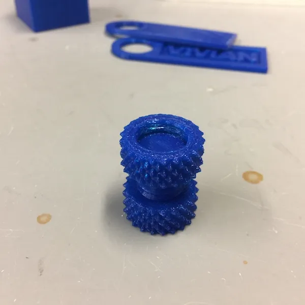
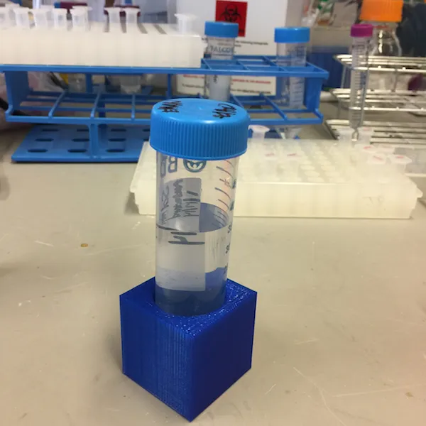
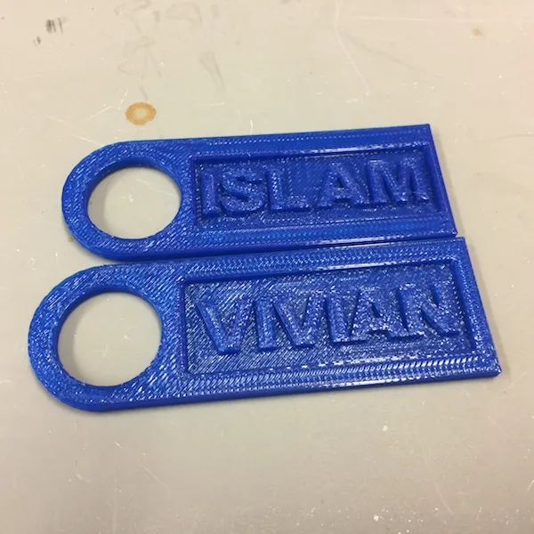
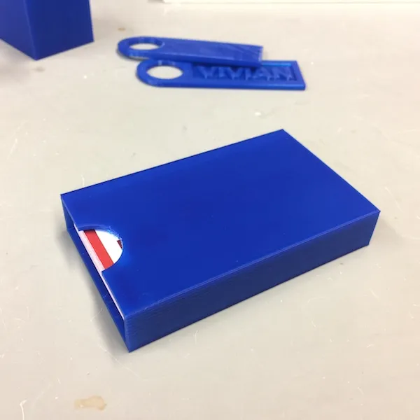

written by Eric J. Ma on 2016-10-18 | tags: hobbies 3d printing
Who would have thought that making stuff could be so fun? (Particularly when the tediousness of actually building it is removed!) I think that the 3D printer I just bought for the lab might really open up new doors for us.
We have the MakerBot Replicator 2. MakerBot is one of the leading brands on the market, according to what I've read online. Their printers tend to be on the expensive side, costing upwards of $2000 for a good model. I was lucky that there was a store demo model on sale at Micro Center nearby campus, so I took a ride over and splurged $600 on it.
I did previously have an M3D Micro for the lab, but that was awfully slow, the heater element was unreliable (resulting in poor prints), the quality of the model filling wasn't as good, and the build volumes were really small. Even though it was touted as a PLA printer, the prints also kept warping. I eventually returned it.
MakerBot, by contrast, was fast, had a reliable heater element, had very strong high quality and high resolution prints, and could print much taller objects.
So why did I splurge lab money on a printer? Well, there's a few reasons.
Firstly, I've been inspired by the maker movement. I'm also thinking about how I could start my own research group or company. Given the spiralling costs of how to do research, mastering 3D printing now could pay off dividends later, as my group could custom 3D print stuff as we needed it, potentially saving time and money down the road. It'd also give us the freedom to think about what equipment we really need, and then just go ahead and make it.
Secondly, one side project I did just for fun was to build a Raspberry Pi-based remote time-lapse camera to spy on seals on Monomoy and Nantucket (see my research). (The larger context is a "seal infectious disease" project led by my advisor Jon.) I worked on this during December 2015 to January 2016, sort of as a distraction while I was waiting for my paper's reviews to come back. As things turned out, my hacked together Tiki cams (as we called them) didn't perform too shabbily, and we could capture, with high resolution over a long period of time (8+ hours), the qualitative contact structure of the seals. But my hack was fragile and inflexible, and I wanted to print better housings for the case for this year's excursion.
Thirdly, ever since the Ebola 2014 outbreak, and now with the current Zika outbreak, I've been reflecting on how to get labs up and running cheaply in resource-poor regions, thereby bringing molecular diagnostics to regions that don't have access to it. DIY-bio PCR machines, gel boxes, and RT-PCR kits are one avenue. I think 3D-printing has a role to play as well. Cheap PLA can be brought over with the 3D printer, and within a matter of minutes to hours, parts that are needed may be printed easily, say, extra tube racks where needed.
I'd argue that there's a human side to this as well: objects carry meaning to people, and for those affected by the outbreak, a printer may provide a humanitarian role by allowing a response team to also print designs that are meaningful to the affected people group, perhaps bringing an added element of trust, comfort, and resilience to the population. (Of course, none of this replaces the human acts of empathy and self-sacrifice.)
Finally, I really, really, really wanted to start playing with 3D printing. (Cue the *sheepish look* here.) But we all know that's a quarternary reason, right, right?
In my quest to figure out 3D printing, I've done some test objects.
The MakerBot had a "nut and bolt" design that was my first print on the machine.

I then used Tinkercad to design a single 50 mL tube holder, and I'm fiddling with designs that'll allow any number of these guys to be chained together.

To commemorate, the purchase of the printer, I've also printed custom keyrings for each of my labmates.

To explore the concept of "appropriate tolerances" for objects and the like, and I've printed out a custom business card holder for myself too.

My colleague Kim also wants a custom 96-well plate holder for a magnetic bead system that she uses for sequencing, so I'll give that a shot. Later on, once I've finally mastered how to do the design work properly, I'll probably start designing the battery and Raspberry Pi cases for the TikiCam Version 2.
@article{
ericmjl-2016-3d-printing,
author = {Eric J. Ma},
title = {3D Printing!},
year = {2016},
month = {10},
day = {18},
howpublished = {\url{https://ericmjl.github.io}},
journal = {Eric J. Ma's Blog},
url = {https://ericmjl.github.io/blog/2016/10/18/3d-printing},
}
I send out a newsletter with tips and tools for data scientists. Come check it out at Substack.
If you would like to sponsor the coffee that goes into making my posts, please consider GitHub Sponsors!
Finally, I do free 30-minute GenAI strategy calls for teams that are looking to leverage GenAI for maximum impact. Consider booking a call on Calendly if you're interested!